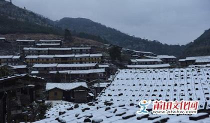

-

“新莆田二十四景”简介
一、九鲤飞瀑九鲤湖，位于仙游县东北部的钟山镇境内，系“仙游四大景”之一，传说汉武帝时，何氏九兄弟在此炼丹，丹成各乘一鲤升天而得名。九鲤湖荡青漾翠，四周林木葱茏，千岩竞秀，怪石嵯峨，瀑漈泱泱，兼具林泉水...
-

莆田市十大“城市名片”
一、湄洲妈祖妈祖，又称天妃、天后、天上圣母、娘妈，是历代船工、海员、旅客、商人和渔民共同信奉的神祗。妈祖的真名为林默,昵称林默娘，诞生于宋建隆元年（960年）农历三月二十三日，因救助海难于宋太宗雍熙四...
-

仙游雪景好漂亮
立春日，石谷解赏雪游客络绎不绝，两场雪让你看看南国如何银装素裹积雪扮新檐柳园村雪景...
-

书峰打造特色游迷醉四方游客
书峰乡位于县城西北部 15 公里、戴云山脉东南麓，东邻榜头镇，南与鲤城街道交界，西与大济镇毗邻，北与社硎乡接壤，境内旅游资源丰富独特，特产有书峰枇杷、青黛、黄金果等。在书峰乡...
-
全省首个“台湾书店”示范店落户湄洲岛
2月3日，由省新闻出版广电局等单位主办的“台湾书店”项目在湄洲岛启动。省新闻出版广电局局长陈立华、副局长张明生，市委常委、宣传部长吴桂芳，市政协副主席黄华出席。 据了解，该项目是贯彻落实省委...
-
妈祖文化与诚信精神传承方法探析
杜阿兰 妈祖信仰历经千年而仍盛行于民间，甚至得到官方的认可，在复兴中隆盛，可见其并不与社会的现代化进程相冲突，相反，其甚至可能成为了社会发展的资本与助力。 政府作为一个强有...